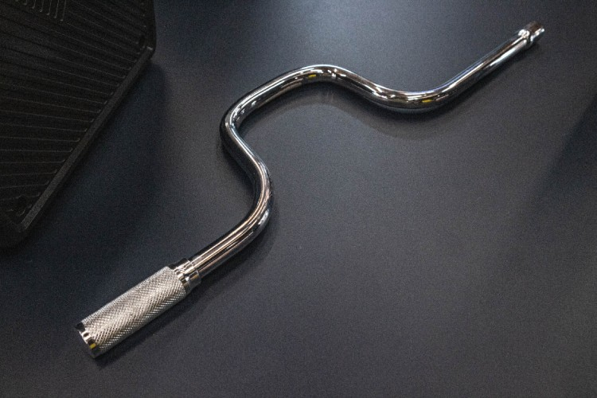
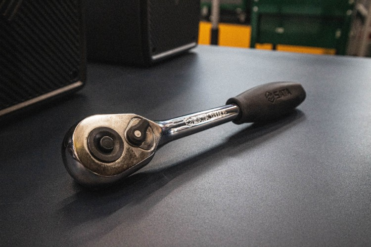

4. ประแจกระบอก (Socket wrench)
ประแจกระบอกมีลักษณเฉพาะเป็นทรงกระบอกทั่วไปที่ข้างในวงจะมีรูปทรงตั้งแต่สี่เหลี่ยม และหกเหลี่ยม หรือเป็นลักษณะประแจแหวนเลยก็มี ในการใช้งานคือต้องใช้ร่วมกับด้ามประแจ ประแจประเภทนี้ใช้สำหรับงานขันน๊อตคลายน๊อต หรือโบลต์ได้ดีที่สุด โดยสามารถขันจนแน่นได้และรักษาหัวน๊อตไม่ให้เยินหรือชำรุด โดยเฉพาะงานที่ต้องการความแม่นยำ หรือขันน็อตในพื้นที่จำกัด เช่น งานซ่อมเครื่องยนต์ งานระบบท่อไอเสีย งานระบบเบรคเป็นต้น ควรเลือกประแจกระบอกที่มีขนาดเหมาะสมกับน็อตและสลักเกลียวที่ต้องการใช้งาน โดยทั่วไปจะมีขนาดตั้งแต่ 6 มิลลิเมตร ไปจนถึง 36 มิลลิเมตรควรพิจารณาซื้อชุดประแจกระบอกที่มีหัวลูกหลายขนาด ครอบคลุมการใช้งานทั่วไปมากที่สุด

5. ด้ามขันแบบสว่าน (Speed handle)
ด้ามขันแบบสว่าน (Speed handle) หรือที่เรียกกันอีกชื่อว่า "ด้ามขันดอกไขควง" (Ratchet screwdriver handle) ใช้ต่อกับประแจกระบอกเพื่อใช้สำหรับขันหรือคลายน๊อต โบลต์ ให้เร็วมากขึ้นแต่ข้อจำกัดคือไม่สามารถขันให้แน่นได้และไม่สามารถคลายน๊อตที่แน่นเกินไปได้ ข้อดีคือ ช่วยเพิ่มพลังและความเร็วในการขันสกรู เหมาะสำหรับงานที่ต้องการแรงบิดสูง หรือต้องการขันสกรูหลายๆจุด ด้ามขันแบบสว่าน ช่วยลดอาการเมื่อยล้าของมือ และข้อมือ เหมาะสำหรับงานที่ต้องขันสกรูเยอะๆ ต่อเนื่องเป็นเวลานาน

6. ประแจด้ามฟรี /ด้ามขันแบบกรอกแกรก (Ratchet handle)
ลักษณะของประแจนี้จะประกอบไปด้วย ด้ามจับ หัวจับ Socket ฟันเฟือง ปุ่มปรับทิศทางการหมุน(ซ้าย-ขวา) การใช้งานจะใช้สำหรับขันหรือตลายน็อต/โบลต์ ในพื้นที่แคบได้ดี มีข้อดีคือใช้งานสะดวก รวดเร็ว ประหยัดแรงเหมาะกับการซ่อมแซมอะไหล่รถยนต์ แต่ข้อจำกัดของประแจนี้คือไม่ค่อยแข็งแรงจึงไม่ควรนำไปใช้งานที่ต้องขันหรือคลายน๊อตที่แน่นมากๆ เพราะอาจเกิดความเสียหายกับกลไกภายในประแจได้